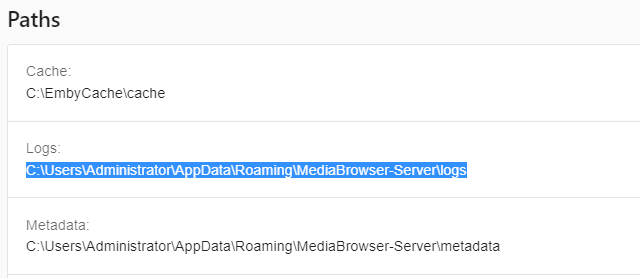
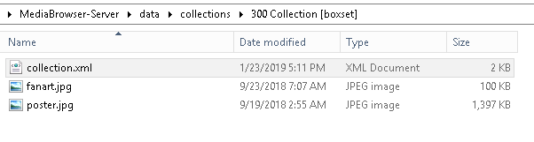

Playlists verwalten (Legacy)
Important
Dies gilt nicht für Emby Server Version 4.6 und höher. Sammlungen werden ab späteren Versionen in der Datenbank gespeichert.
Wenn Sie Ihre Inhalte auf der Festplatte verschieben, nachdem Sie bereits Sammlungen erstellt haben, müssen Sie entweder diese Sammlungen über die Web-GUI neu erstellen oder die einzelnen Textdateien, die alle Sammlungsinformationen enthalten, manuell bearbeiten. Dieses Tutorial behandelt, wie Sie Ihre Sammlungsinformationen manuell bearbeiten können.
Die Dateien, die die Sammlungsinformationen speichern, befinden sich im Ordner „data\collections“, der sich direkt unter Ihrem Emby Server-Ordner befindet.
Unter Windows kann dies etwa so aussehen:
C:\Users\IhrBenutzernameHier\AppData\Roaming\MediaBrowser-Server\data\collections
Eine einfache Möglichkeit, diesen Ordner auf JEDEM Betriebssystem, auf dem Emby läuft, zu finden, besteht darin, zu Ihrem Web Dashboard zu gehen und auf der rechten Seite nach unten zu scrollen, bis Sie zur Abschnitt PATHS gelangen, der in etwa so aussieht:

Wenn Sie entweder die LOGS- oder METADATA-Einträge betrachten und den letzten Teil des Ordnernamens entfernen, hätten Sie (in diesem Beispiel): C:\Users\Administrator\AppData\Roaming\MediaBrowser-Server\
Fügen Sie „data\collections“ am Ende dieser Zeile hinzu, um zu gelangen: C:\Users\Administrator\AppData\Roaming\MediaBrowser-Server\data\collections
Dieser Ordner wird unsere Liste der Sammlungen enthalten, die wie folgt aussehen wird:

Jeder dieser Ordner repräsentiert eine Sammlung. Wenn wir einen Ordner wie die oben gezeigte 300 Sammlung betreten, werden wir einige Dateien haben, die so ähnlich aussehen.

Sie können sehen, dass wir einige Fanart und ein Poster sowie die collection.xml-Datei haben, die die Informationen enthält, die wir bearbeiten möchten. Sie können dies mit jedem Texteditor bearbeiten, wie zum Beispiel Notepad oder Notepad++. In diesem Beispiel verwenden wir Windows Notepad.

Einmal in Notepad geöffnet, scrollen wir nach unten zum Ende der Datei, wo sich die Pfade befinden. In dieser Sammlung sehen Sie, dass es 3 Dateien gibt. Zwei normale Videos und eine 3D-Version. Die Pfade sind:
- F:\Movies#\300 (2006)\300 (2006).mp4
- F:\Movies#\300- Rise of an Empire (2014)\300- Rise of an Empire (2014).mp4
- F:\3D Movies\300- Rise of an Empire (2014).3D.Half-SBS\300- Rise of an Empire (2014).3D.Half-SBS.mp4
Angenommen, wir haben alle unsere 3D-Filme auf Laufwerk G verschoben und unsere normalen Filme (die ersten beiden) auf Laufwerk M, hätten wir:
- M:\Movies#\300 (2006)\300 (2006).mp4
- M:\Movies#\300- Rise of an Empire (2014)\300- Rise of an Empire (2014).mp4
- G:\3D Movies\300- Rise of an Empire (2014).3D.Half-SBS\300- Rise of an Empire (2014).3D.Half-SBS.mp4
Alles, was wir tun müssen, ist, die oben in Notepad angezeigten PFADEN zu bearbeiten, so dass es so aussieht:

Speichern Sie Ihre Änderungen in Notepad und wiederholen Sie diesen Vorgang für die nächste Sammlung, die Sie ändern müssen.
Note
Bitte stellen Sie sicher, dass die von Ihnen verwendeten Pfade genau mit der Art und Weise übereinstimmen, wie Sie Ihre Bibliothek eingerichtet haben. Wenn Sie beispielsweise Ihre Bibliothek mit: "D:\movies" eingerichtet haben, aber Ihre aktuellen Wiedergabelisten "\server\movies" haben, wird dies nicht funktionieren. Stellen Sie sicher, dass Sie konsistent sind und entweder Laufwerksbuchstaben oder UNC-Pfade sowohl für die Bibliotheken als auch für die Sammlungen verwenden.
Wenn Sie Ihre Sammlungen bearbeitet haben, führen Sie bitte ein Bibliotheks-Update durch, indem Sie auf die Schaltfläche "Alle Bibliotheken scannen" oben auf der Bibliotheksmenüseite klicken.
Wiedergabelisten können auf die gleiche Weise wie Sammlungen migriert werden. Informationen zur Wiedergabelisten-Migration finden Sie in diesem Artikel.